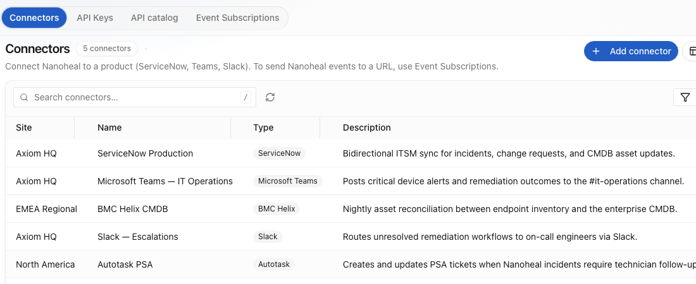

Home / Platform / Orchestrate the IT Ecosystem
04 — Orchestrate the IT Ecosystem
Most fixes don’t end on the device.
A stale credential is resolved in the directory. A resolved incident has to be closed in ITSM. A licence is reclaimed in a SaaS console. Automation confined to the endpoint stops halfway through most of the work.
The issue
Integration is where automation projects quietly die.
What normally happens
Every connector is a project.
Connecting to ServiceNow means an integration build. Active Directory means another. Each has its own authentication, its own error handling, its own field mapping, and its own maintenance burden when either side changes. Integration backlog becomes the reason automation stalls — not the automation itself.
What Nanoheal does
Describe the system, not the code.
Any system exposing a standard API interface is integrated by describing what it offers. The context layer handles authentication, calls, mapping and error handling. No connector is written, so no connector is maintained.

01 — What it connects
The systems the work actually lives in.
| System class | Examples | What Nanoheal does there |
|---|---|---|
| ITSM | ServiceNow and comparable platforms | Reads incident, problem and change history for context; creates, updates and closes tickets as work completes |
| Directory & identity | Active Directory, Entra ID, identity providers | Group membership, account state, credential and session actions, access requests |
| IT management | MDM, endpoint management, patch and software platforms | Reads and reconciles state; acts where the platform is authoritative |
| CMDB & asset | Configuration and asset systems | Resolves ownership, role, entitlement and compliance obligation before acting |
| Workplace & collaboration | Collaboration, network, cloud and SaaS platforms | Configuration, licence reclaim, connectivity and access remediation |
02 — How it connects
No code, and therefore no connector backlog.
The mechanism is the same one that removes scripting from remediation. The context layer holds a description of what a system exposes — its operations, its objects, its fields. Intelligence selects the operation and supplies the parameters. Nothing is generated and nothing is compiled into a custom connector.
This is why adding a system is measured in the time it takes to describe and approve it, rather than in engineering sprints, and why the integration doesn't break the next time either side ships a release.
The reason integration is normally slow is that somebody has to write the integration. Remove that and the schedule changes shape.
| Surface | Direction | What it is for |
|---|---|---|
| Connectors | Nanoheal → a product | Named, per-site links to the systems the work lives in — ITSM, CMDB, PSA, collaboration |
| Event subscriptions | Nanoheal → any URL | Pushing device and remediation events into whatever you already run, without a connector for it |
| API keys & catalog | A product → Nanoheal | Scoped programmatic access for the systems that need to read or drive the estate |
Connectors are scoped to a site rather than to the tenant, which matters more than it sounds: a regional CMDB, a business unit’s own ServiceNow instance and a partner’s PSA can coexist under one console without anybody having to pick a winner.
03 — What it makes possible
One resolution, across four systems, unattended.
A worked example, in the order it happens:
| Step | Where | What happens |
|---|---|---|
| Symptom | Endpoint | Repeated authentication failures surface in the OS event log |
| Context | Directory + CMDB | Account state and group membership read; device owner, role and compliance obligation resolved |
| History | ITSM | Two similar incidents in the last quarter; the known resolution is retrieved |
| Action | Device + directory | Cached credential cleared and profile repaired on the device; the stale directory object corrected |
| Close | ITSM | Ticket created and closed with what was done, so the record exists without a human writing it |
Every one of those steps is available to a scripted approach. What isn't available is doing it without five integrations, a scheduler and somebody maintaining all of it.
04 — What governs it
Guardrails travel with the action.
Acting in ITSM or a directory is higher-consequence than acting on one endpoint, and it is governed accordingly: scoped credentials per system, explicit allow-lists of permitted operations, approval gates, change windows, blast-radius limits and full attribution of what ran, where, and on whose authority.
See a symptom resolve itself.
Bring us your top three call drivers. We'll show you the same three resolving on a live endpoint — with no script written, and nothing left running to watch for them